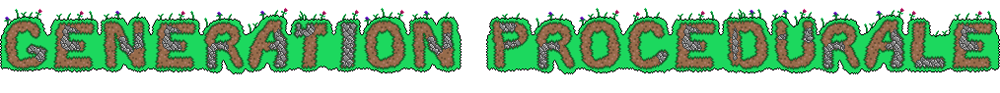

La Generation Procedurale
En informatique, la génération procédurale (ou modèle procédural) est la création de contenu numérique (niveau de jeu, modèles 3D, dessins 2D, animation, son, musique, histoire, dialogues) à une grande échelle (en grande quantité), de manière automatisée répondant à un ensemble de règles définies par des algorithmes. Le modèle procédural s’appuie sur les informations d'un algorithme pour créer.
La méthode de génération procédurale trouve principalement application dans les domaines du jeu vidéo et du cinéma. Dans le domaine du jeu vidéo, il y a la notion de création à portée artistique ainsi que de conception de contenu à grande échelle, c'est pourquoi la notion de génération procédurale s'associe avec un contrôle a posteriori par l'artiste qui modifie l’environnement (simulation, modélisation).
La génération procédurale est une catégorie des techniques de modélisation (les deux autres étant la simulation informatique et la modélisation par esquisses ou par édition) permettant la création d'un monde virtuel cohérent.
Source © Wikipedia
 Quelques examples
Quelques examples